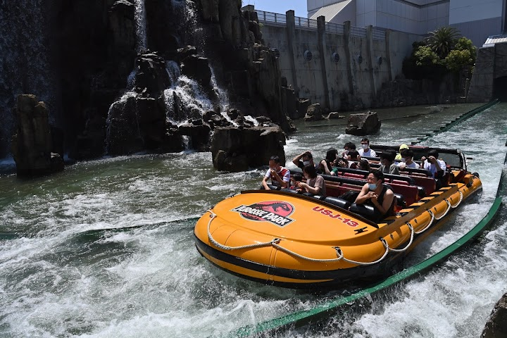
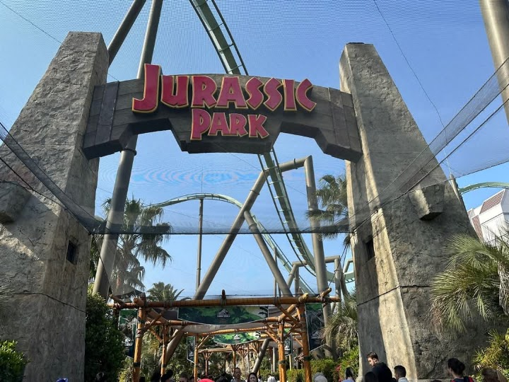
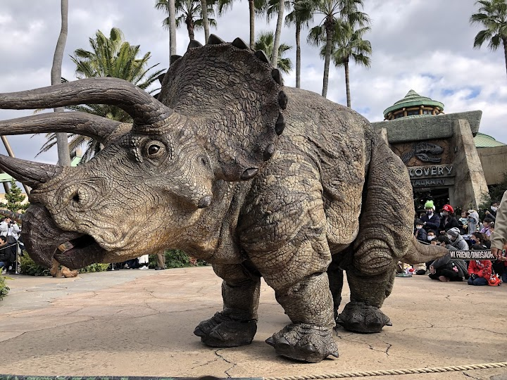
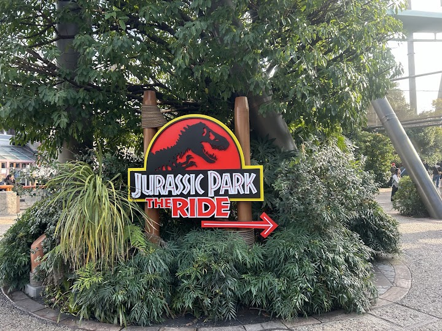
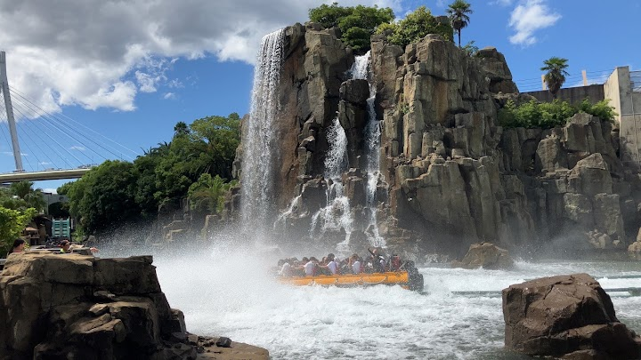

Jurassic Park: The Ride (you get wet)
Open in Google Maps (street view, more photos and reviews there)






Visitor tips on finding it and getting there
Jurassic Park – The Ride inside Universal Studios Japan is a very exciting and enjoyable attraction. It is a great ride for visitors who like adventure, dinosaurs, water rides, and movie-themed experiences. The ride starts with a calm boat journey through the Jurassic Park area, where visitors can see dinosaurs and jungle-style decorations. The atmosphere feels very realistic and adventurous, like entering the world of Jurassic Park. As the ride continues, the excitement increases with darker scenes, dinosaur surprises, sound effects, and a thrilling final drop. The big water splash at the e
Fairly slow boat road with a big drop at the end. Great scenery. It's like you are on a safe boat ride looking at dinosaurs, but the boat takes a wrong turn towards where the raptors and tyrannosaurus escaped.